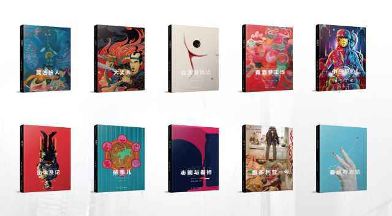

（文末有福利↓）
描述一个人，我们擅长给他/她贴标签，以便快速输出第一印象。作为大玩四方的游戏者，我们介绍“彭浩翔”，会在他的身份之前加上“鬼才”。
广州话有个俚语——“鬼马”，形容“机灵古怪”，又含神秘之意。“鬼才”，顾名思义，就是擅长搞怪的天才。童心之人，才会热衷在作品中搞怪，并且很多创意点追根溯源，都是童年乐事与幻梦。在《春娇救志明》的开场，彭浩翔放了一段趷趷刚怪兽的情节，来源于妻子幼年时母亲自创的恐怖故事。志明的原型，亦是彭浩翔本人。他花大价钱买不实用的装饰品，将干冰倒进马桶冒烟，花一个晚上去野外等外星人，挽回女友，会导演一场“英雄救美”戏。
这样的人，可以对他的作品抱有期待。因为他们创作，首先是满足自己，并期许能在戏剧中间埋藏彩蛋，给予观众惊喜。但有的人玩心大发，经常会飞出边界，彭浩翔有能力收住。他说：“一份剧本最好是能够做到‘一字不多，一字不少’。”在我看来，他的电影低俗中有纯情，恶趣味中见情调，无所谓的外表下，深藏一颗有爱的心。在各色混搭中，凸显个人风格。他将电影调配得色听俱全，将青年心性、情感关系精准勾画，怪不得大家都能对号入座。
找到一件真正爱的事情去做，最后不一定会成功，但至少过程甘之如饴。这也是彭浩翔给出的毕业生建议：“当你有一个明确的目标，就不会觉得迷茫了。”如果彭浩翔不热爱电影，他就不会在拍出第一部长片时，哼哧哼哧写了几百个剧本练笔。正因为这些历练，从业至今，他总共拍出了14部风格各异的电影。
现在，他集结十部重要代表作剧本，邀请来自世界各地的设计师重新设计封面，出版了这一套电影剧本集。你能在书中看到一个经过银幕验证的绝佳故事，还可以通过这些真正的剧本，学习编剧的技巧。
片刻APP：最近您在内地出版了一套剧本集，我们知道，剧本跟小说，本质都是在呈现“故事”，但目前读者对于剧本这个体裁的图书还比较陌生，您可以为我们简单地介绍一下这套剧本集吗？
彭浩翔：这套剧本集完整收录了我从影以来比较有代表性的十部电影的剧本，里面还包括故事分镜图和幕后花絮照片，而且这十部作品的封面是我请来自世界各地的设计师重新进行设计的。
片刻APP：有编剧说，一个剧本是直到电影上映之后，才算彻底完成的。在您的导演经历中，有没有因为外在限制而修改剧本，最后反而出彩的例子？
彭浩翔：我觉得不能这样说，因为这样说很容易会变成鼓励外在限制。其实因为外在限制而修改剧本，最后反而出彩，很大机会是代表那份剧本本来就有结构性的问题。 一份剧本最好是能够做到“一字不多，一字不少”。如果还未到这个境界，再因外在限制而更改剧本令剧本变好了，就证明原本的剧本其实不够好。
片刻&彭浩翔签名剧本书详情>>恭喜三位幸运片客获得彭浩翔剧本书，分别为：@树里藏着、@璇小妖、@璇小妖，已经片邮通知三位，请在5天内认领。谢谢。


请输入评论内容